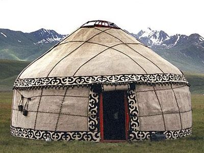
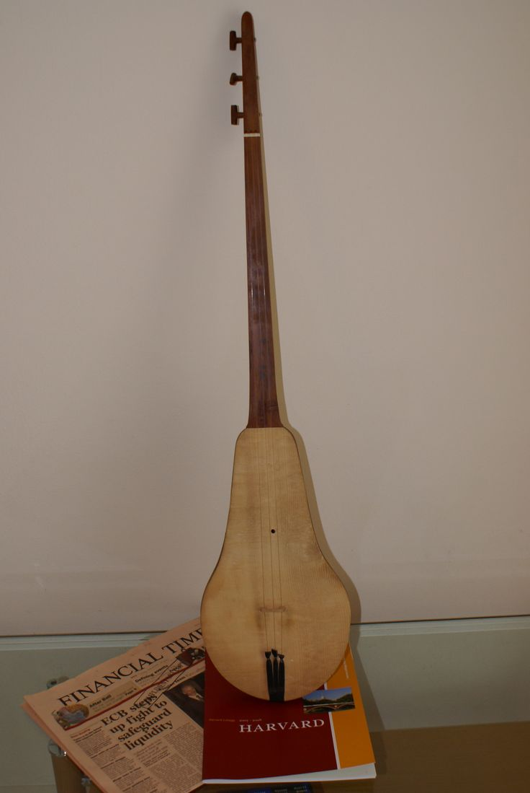
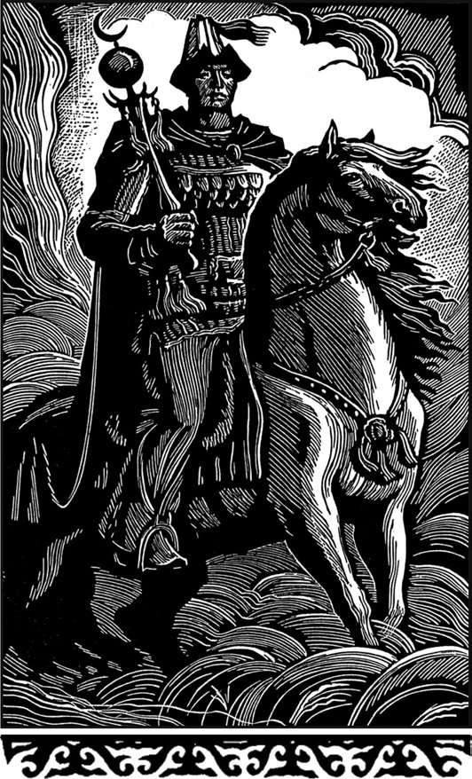
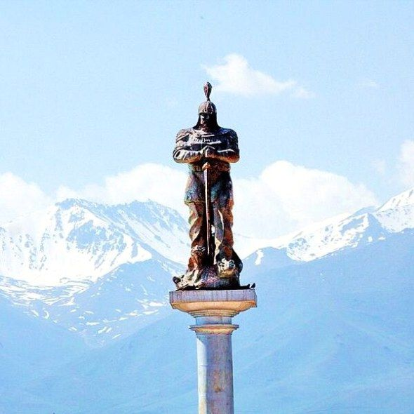

Добро пожаловать на сайт об истории и культуре Кыргызстана!
Кыргызстан — страна с богатой историей, древними традициями и неповторимой природой. От первых упоминаний о кыргызах в III веке до нашей эры до современности наш народ прошёл длинный путь, сохраняя уникальную культуру и самобытность.
На этом сайте вы узнаете о важнейших событиях в истории Кыргызстана, о древних традициях, эпосах и праздниках кыргызского народа. Мы собрали для вас достоверную информацию, чтобы каждый мог прикоснуться к величию нашего прошлого.
Уникальность Кыргызстана
- 🌄 Великолепная природа: горы, озёра и зелёные долины.
- 🏕 Древняя культура: традиции кочевников и богатое наследие.
- 🤝 Гостеприимство: кыргызский народ известен своим радушием.
- 🍽 Вкусная кухня: бешбармак, олобо, эжигей, быжы, чучук, жупка, жарма,
бозо, кымыз, чалап, боорсок, токоч курут и многое другое.
Краткая историчесаая хронология Кыргызстана
III век до н.э.
Первое упоминание о кыргызах.
Первое упоминание о кыргызах.
840 год
Образование Кыргызского каганата.
Образование Кыргызского каганата.
1876 год
Вхождение в состав Российской империи.
Вхождение в состав Российской империи.
1916 год
Үркүн - народное восстание кыргызов.
Үркүн - народное восстание кыргызов.
1991 год
Cуверенный Кыргызстан.
Cуверенный Кыргызстан.
Сегодня
Суверенное государство с яркой культурой.
Суверенное государство с яркой культурой.
Традиционные символы Кыргызстана

Юрта — традиционное жилище кочевников.

Комуз — национальный музыкальный инструмент.

Эпос "Манас" — величайший эпос кыргызского народа.

Ала-Тоо — символ красоты кыргызской природы.